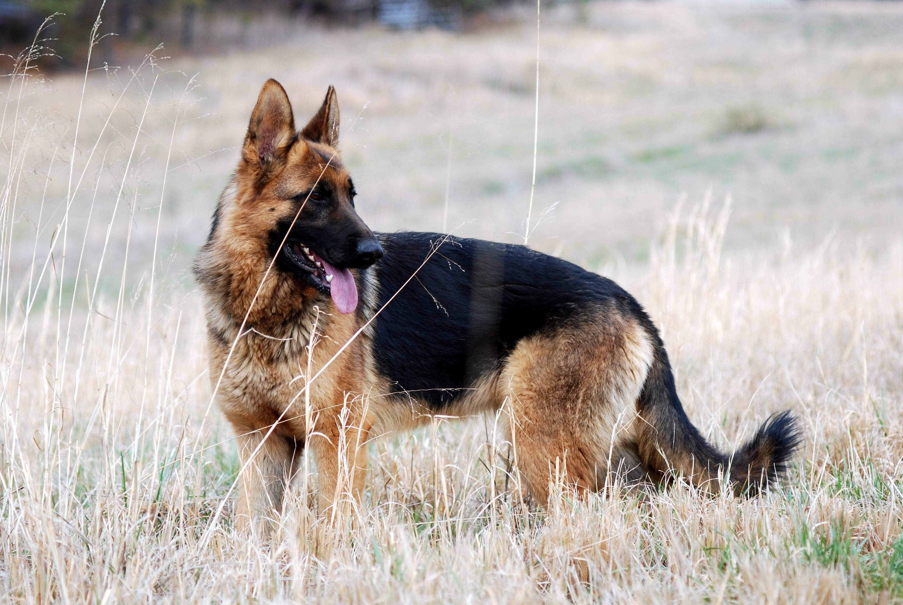
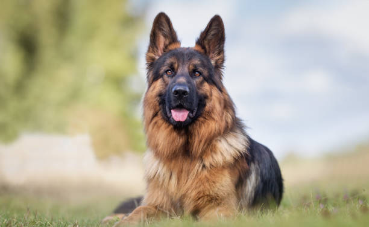
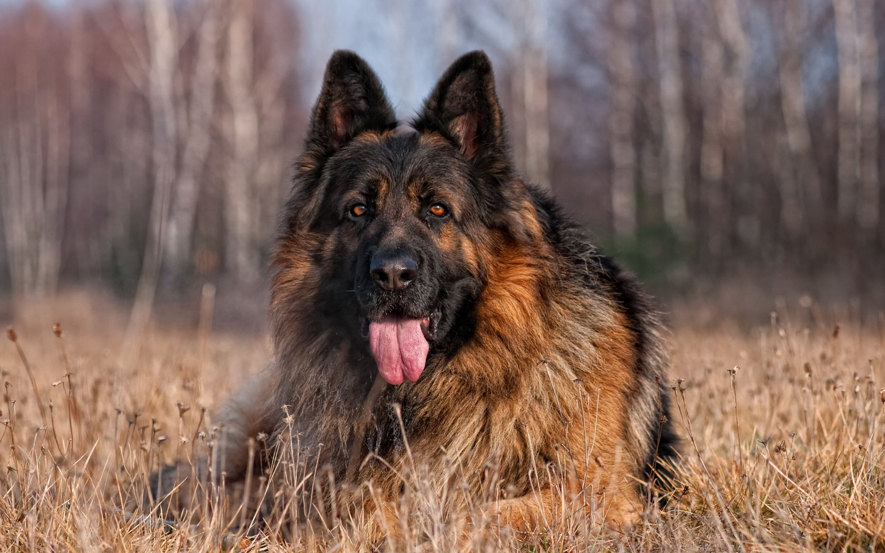

German Shepherd Dog

origin
Germany
size
Large
color
Others
type
Purebred
breed group
Herding (AKC:1908, UKC)
character
Smartest
temperament
Alert
Confident
Courageous
Watchful
height
24-26 inches (60-65 cm)
weight
66-88 pounds (30-40 kg)
geography
Europe
overview
The German Shepherds are medium to large-sized dogs, well-balanced, muscular dog, slightly longer than tall, with a medium length coat, erect ears, and a low-set natural tail that normally reaches to the hock and is carried in a slight curve like a saber. The outline of the German Shepherd Dog is made up of smooth curves rather than angles. The head is in proportion to the size of the body, strong without appearing coarse or fine. Gender differences are readily apparent. The German Shepherd Dog should be evaluated as an all-around working dog, and exaggerations or faults should be penalized in proportion to how much they interfere with the dog’s ability to work.
history
The German Shepherd Dog is a relatively young breed, developed almost single-handedly in the first half of the twentieth century by a German cavalry officer, Max von Stephanitz, president of the Verein far Deutsche Schaferhunde S.V. Using a variety of German sheepdogs as his foundation stock, von Stephanitz developed a distinctive breed in a very short period of time, due in large part to the authoritarian practices of the German dog fancy at that time.
Von Stephanitz emphasized utility and intelligence in his breeding program, enabling the German Shepherd Dog to switch easily from herding duties to other fields of work, particularly military and police work. The breed was just gaining notice in the United States when World War I broke out. All things German were shunned and popularity slumped. After the war, however, movie star Rin-Tin-Tin stimulated interest in the breed again. The striking good looks of this breed, combined with its remarkable intelligence and loyalty, have made it a favorite working and companion dog.
Photo Gallery


